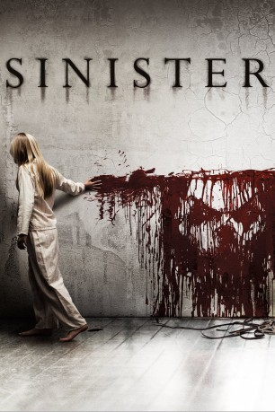

#5245 Sinister - Wenn Du ihn siehst, bist Du schon verloren
Alternativ: Sinister
 
 IMDB-Wertung: 6.8 / 10
IMDB-Wertung: 6.8 / 10  Metascore: 0
Metascore: 0 
Der geplagte Schriftsteller Ellison muss wegen finanzieller Probleme mit Frau und Kindern in ein kleineres Haus ziehen, in dem vor Jahren eine Familie auf ungeklärte Weise ums Leben kam. Ellison glaubt nicht an die Gerüchte und hofft stattdessen, dort seinen neuen Kriminalroman beenden zu können. Auf der nächtlichen Suche nach Inspiration findet er auf dem Dachboden eine Kiste mit alten Filmrollen, die neben Familienaufnahmen des Vorbesitzers auch äußerst verstörende Aufnahmen enthalten. Nachdem die Polizei keine Hilfe ist, beginnt er, auf eigene Faust zu ermitteln und stößt auf ein Geheimnis, das ihn fast an seinem Verstand zweifeln lässt. Während er mit der Lösung des Rätsels beschäftigt ist, scheinen unheimliche Mächte von seinen Kindern Besitz zu ergreifen, die in Zusammenhang mit den Filmen und den Morden stehen.
Jahr: 2012
Dauer: 109 Minuten
FSK: 16
Land: USA Studio: Summit EntertainmentTonspuren: DTS - ,
Untertitel: Deutsch,
Auflösung: 1080p (1920x800) Größe: 5591 MB
Genre: Horror, Mystery
Regisseur: Scott Derrickson
Drehbuch: Laurens van der Post
Soundtrack:
Darsteller:
 Ethan Hawke als Ellison Oswalt
Ethan Hawke als Ellison Oswalt Juliet Rylance als Tracy
Juliet Rylance als Tracy Fred Dalton Thompson als Sheriff
Fred Dalton Thompson als Sheriff James Ransone als Deputy
James Ransone als Deputy- Michael Hall D'Addario als Trevor
 Clare Foley als Ashley
Clare Foley als Ashley- Tavis Smiley als Anchor
- Victoria Leigh als Stephanie
- Cameron Ocasio als BBQ Boy
- Danielle Kotch als Lawn Girl
- Blake Mizrahi als Sleepy Time Boy
- Nicholas King als Bughuul / Mr. Boogie
 Vincent D'Onofrio als Professor Jonas , uncredited
Vincent D'Onofrio als Professor Jonas , uncredited- Rob Riley als E.M.T.
- Janet Zappala als Reporter
- Ethan Haberfield als Pool Party Boy
- Lorraine Aceves als BBQ Mom , uncredited
- Chester the Chihuahua als Barking Dog , uncredited
- Rachel Konstantin als Mrs. Stevenson , uncredited
Datei: X:\2-Dilogie(N-Z)\Sinister\Sinister - Wenn Du ihn siehst, bist Du schon verloren (2012, FSK16, 1920x800).mkv seit 04.01.2017
Festplatte: HD Collection-2(A-Z)-3(A-M)
 Alle Filme aus Gruppe '2-Dilogie(N-Z)\Sinister'
Alle Filme aus Gruppe '2-Dilogie(N-Z)\Sinister'